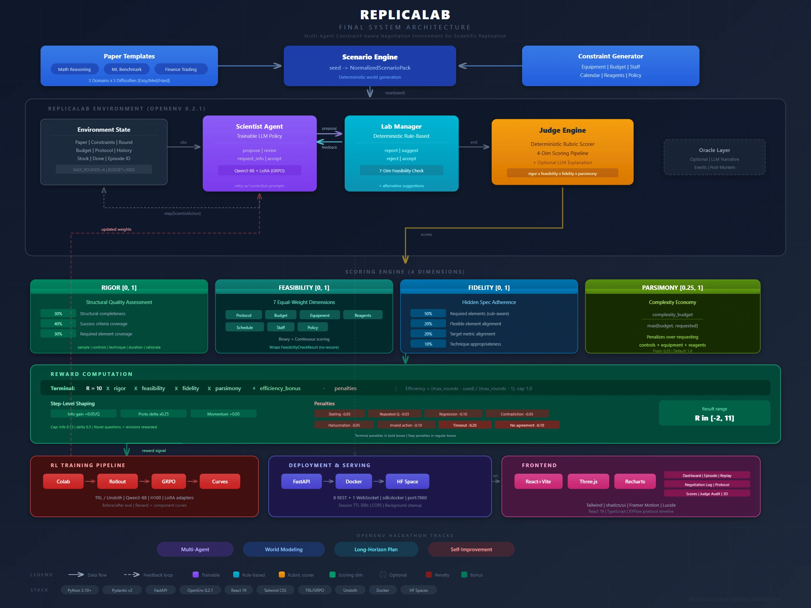

Experimental systems
ReplicaLab
A planning environment where agents negotiate a replication study within a budget and schedule.

Scenario Negotiation Deterministic judge
Making constraints explicit
A feasible replication study must fit the available equipment, time and budget. The environment gives a scientist agent and lab manager separate roles and a deterministic judge to score the resulting plan.



My contribution
I owned the server, deployment and runtime plumbing. Kian handled schemas and judge logic, Ayush worked on the scientist and client, and Kush built the frontend and demo assets.
Evaluation scope
The judge scores rigor, feasibility and fidelity within the simulated scenario. The resulting reward describes a proposed plan under those assumptions. Real-world replication outcomes lie outside the experiment.